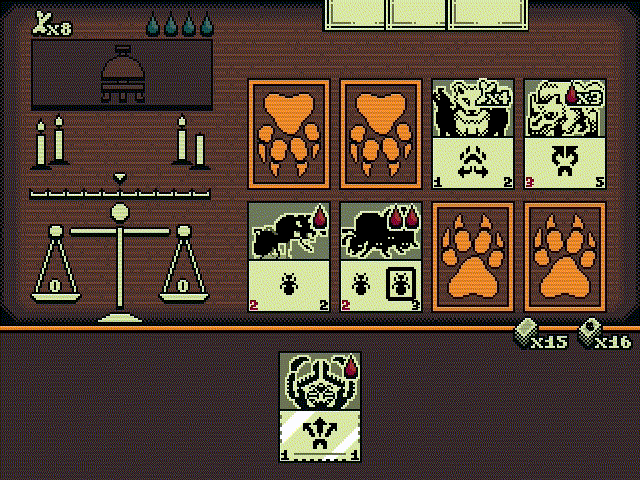
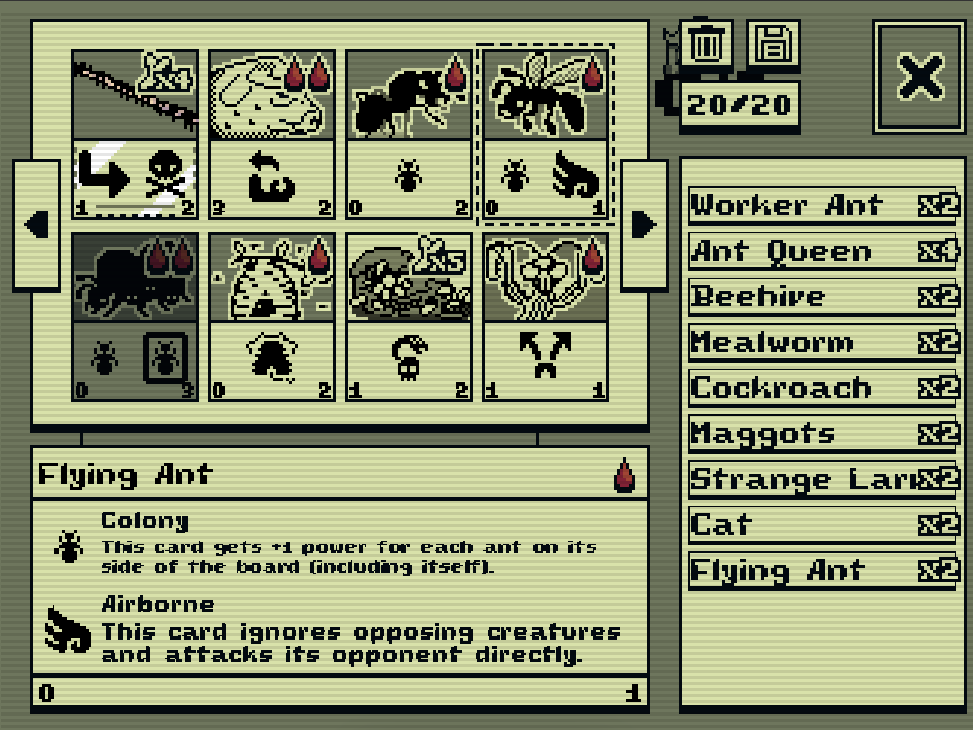

<< Back
Inscryption (Multiplayer Version)
This project is a multiplayer version of the popular roguelike card game Inscryption. The original verison of the game was made by Daniel Mullens Games. As I played the original, I found myself wishing that the game had a multiplayer mode. Since it did not, I decided the only thing left to do was to make one myself!

Making the Game
Turn-based games like Inscryption always seem deceptively simple to make. After all, they're just fancy menus, right? But it turns out they're complicated menus, too.
The key to managing all that complexity was a state machine architecture, which organizes
behavior into different states like PLAYER_DRAW and PLAYER_TURN.
Using Godot helped with this as well, because the engine has built-in tweening, and its scripting
language offers concurrency features in the form of an await keyword. Being able to handle
things like animations using await (as in await card.animate_death()), allowed me to reduce
the number of states in the state machine and also write the code in a way that was more legible.
As for the game's art assets, almost all of them come from the original Inscryption game files. The original Inscryption is a Unity game, so I was able to use a third-party Unity resource unpacker to decompile the pack file and get access to the assets. Some of the cards, like the Worker Ant and Flying Ant, appeared only in Act I of Inscryption and had no Act II style portrait to accompany them. I was able to work these cards into the game with the help of a pixel artist who descaled the Act I portraits into the low-resolution Act II style.

Getting Everything Online
During development, I used desktop builds of the game and connected them over LAN for multiplayer testing. When it came time to release, I figured it would be more convenient for players if I released an HTML5 build, but the web build introduced some challenges with networking, since the LAN socket based netcode no longer worked once the game was running through a browser.
To get through this hurdle I first had to switch from using UDP sockets to using web sockets, a transition which Godot handled seamlessly. Then I had to setup a Godot program which could act as a dedicated server. I hosted this server on an EC2 instance, complete with DNS and a CA. The CA was necessary because I was hosting the web clients on itch.io, and itch only supports web sockets through web socket secure, which requires a CA.
This was all worth it in the end, though, and I was able to enjoy a few rounds of multiplayer Inscryption with my friends and family.